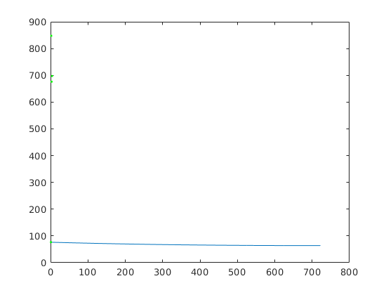
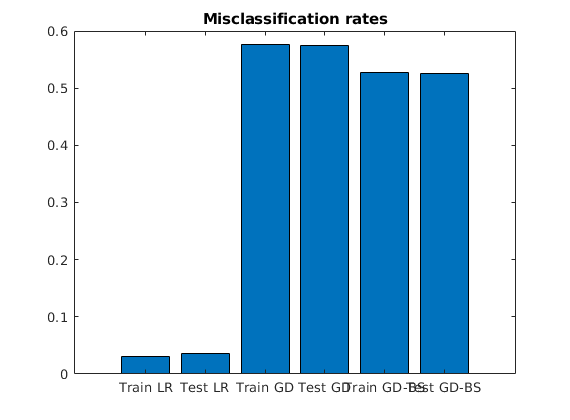

Contents
clear all close all
Part 1 - Retrieval
load("mnist.mat") % % figure(1) % clf % i = 1; % imshow(reshape(trainX(i,:),28,28)') % title(trainY(i))
Part 2 - Pre-processing
idx = trainY == 4 | trainY == 9; Atr = double(trainX(idx,:)); btr = double(trainY(idx))'; ntr = size(Atr, 2); mtr = size(Atr, 1); btr(btr==4)=1; btr(btr==9)=-1; idx_test = testY == 4 | testY == 9; Atest = double(testX(idx_test,:)); btest = double(testY(idx_test))'; mtest = size(Atest, 1); % Turn labels into +1 -1 btest(btest==4)=1; btest(btest==9)=-1; % Normalization [Atr, Amean, Astd] = normalize(Atr); % TODO: Why is it important to use the pre-computed mean and standard % deviation Atest = Atest - ones(mtest,1)*Amean; Atest = Atest ./ max(ones(mtest,1)*Astd,1); % Validation Functions C = @(z) (z > 0)*2 - 1; I = @(x,y) x ~= y; misclass_rate = @(A,y,x) sum(I(C(A*x), y))/length(y);
Part 3 - Linear Regression
x_lr = Atr \ btr; train_loss = norm(Atr*x_lr - btr, 2) test_loss = norm(Atest*x_lr - btest, 2) train_misclass_rate_lr = misclass_rate(Atr, btr, x_lr) test_misclass_rate_lr = misclass_rate(Atest, btest, x_lr)
Warning: Rank deficient, rank = 607, tol = 2.842930e-10.
train_loss =
46.2200
test_loss =
26.3921
train_misclass_rate_lr =
0.0308
test_misclass_rate_lr =
0.0362
Part 4 - Logistic Regression
Pre-process
btr = (btr+1)/2; btest = (btest+1)/2; % Initialize functions sig = @(x) 1./(1+exp(-x)); f = @(x) f_func(Atr, btr, x, sig); g = @(x) Atr'*(sig(Atr*x) -btr)/mtr; l = @(x) norm(Atr*x - btr, 2); x0 = zeros(ntr, 1); epsilon = 1e-1; max_iter = 1e3; % Gradient Descent [x_gd, trace_gd, status] = gd(g, l, x0, 1/mtr ,max_iter, epsilon); if status < 0 disp("GD diverged") end train_misclass_rate_gd = misclass_rate(Atr, btr, x_gd) test_misclass_rate_gd = misclass_rate(Atest, btest, x_gd ) figure(1) plot(trace_gd) hold on % Backtracking Line Search [x_gd_bt, trace_bt, status] = gd_bt(f, g, l, x0, 1, 0.5, 0.5, 1000, 1e-1); if status < 0 disp("GD diverged") end train_misclass_rate_gd_btls = misclass_rate(Atr, btr, x_gd_bt) test_misclass_rate_gd_btls = misclass_rate(Atest, btest, x_gd_bt) plot(trace_bt, 'g.') hold off figure(2) rates = [train_misclass_rate_lr, test_misclass_rate_lr, train_misclass_rate_gd,test_misclass_rate_gd, train_misclass_rate_gd_btls, test_misclass_rate_gd_btls]; bar(rates) title('Misclassification rates') set(gca,'xticklabel',{'Train LR', 'Test LR', 'Train GD','Test GD','Train GD-BS', 'Test GD-BS'}); function [X, avg, Xstd] = normalize(X) [m, ~] = size(X); avg = mean(X,1); X = X - ones(m,1)*avg; Xstd = std(X,1); X = X ./ max(ones(m,1)*Xstd,1); end function cost = f_func(A, b, x, act_func) [m, ~] = size(A); z = act_func(A*x); cost = sum(-log(z(b == 1))) + sum(-log(1 - z(b == 0)))/m; end
GD diverged
train_misclass_rate_gd =
0.5770
test_misclass_rate_gd =
0.5746
train_misclass_rate_gd_btls =
0.5277
test_misclass_rate_gd_btls =
0.5249
 